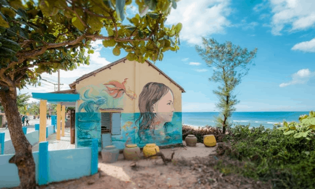

Du lịch Quảng Nam không chỉ có di sản thế giới phố cổ Hội An và Thánh Địa Mỹ Sơn… mà còn sở hữu vô cùng nhiều những bãi biển đẹp, những khu du lịch sinh thái và địa điểm du lịch hấp dẫn khác. Cùng Vntrip khám phá Du lịch Quảng Nam có gì nhé!
Top 5 Du lịch Quảng Nam nổi tiếng
Phố Cổ Hội An
Phố cổ Hội An chắc chắn là địa điểm du lịch không thể không đến trong hành trình khám phá Quảng Nam. Hội An là một trong hai di sản văn hoá thế giới của tỉnh Quảng Nam với những giá trị văn hoá và kiến trúc cổ còn được gìn giữ nguyên vẹn qua năm tháng. Bạn sẽ cảm thấy vô cùng thư thái và bình yên khi tản bộ trên những con phố với những bức tường vàng cổ kính với hai bên là những ngôi nhà mái ngói nhỏ xinh mang kiến trúc giao thoa đặc sắc và những góc bằng lăng tím rực cả khu phố. Đến đây, bạn cũng đừng quên đến thăm Chùa Cầu, trải nghiệm du thuyền qua sông Hoài thơ mộng và hoà mình vào không gian rực rỡ của những chiếc đèn lồng đầy màu sắc.
Thánh Địa Mỹ Sơn
Thánh địa Mỹ Sơn là một niềm tự hào của người dân Quảng Nam. Được công nhận là Di sản Văn hoá Thế giới, thánh địa Mỹ Sơn sở hữu hơn 70 đền tháp cổ theo kiến trúc Chăm được xây dựng từ thế kỷ 4. Trong đó, 20 đền tháp vẫn gìn giữ được vẻ đẹp hoang sơ ban đầu như tháp Mỹ Sơn, tháp Bằng An, tháp Khương Mỹ,… Bạn sẽ phải trầm trồ trước sự kết hợp hài hoà của những hoa văn và chi tiết chạm khắc vô cùng tinh xảo trên tường gạch nung, tạo nên những tuyệt tác kiến trúc cực kì độc đáo của một nền văn hoá Chăm-pa lâu đời.

Cù Lao Chàm
Ở Quảng Nam có một hòn đảo “thiên đường” mang tên Cù Lao Chàm với khí hậu mát mẻ quanh năm, những rặng san hô đẹp ngây ngất cùng nguồn hải sản dồi dào phong phú. Cù Lao Chàm còn là một khu dự trữ sinh quyển của thế giới. Du lịch Cù Lao Chàm chắc chắn sẽ thu hút những du khách yêu thích khám phá vẻ đẹp tự nhiên hoang sơ của biển. Không chỉ vậy, bạn cũng sẽ được tham gia nhiều hoạt động ngoài trời hào hứng như: chèo kayak, lặn ngắm san hô, nhảy dù,…
Làng bích hoạ Tam Thanh
Làng bích hoạ Tam Thanh toạ lạc ở xã Tam Thanh, Quảng Nam. Lạc vào làng bích hoạ Tam Thanh, bạn tưởng như đang lạc vào xứ cổ tích lung linh diệu kì. Hàng trăm ngôi nhà đơn sơ cũ kĩ của người dân chài nơi đây được khoác lên mình những “tấm áo mới” đầy màu sắc được tạo bởi những đôi bàn tay khéo léo của những hoạ sĩ Hàn Quốc. Mỗi bức tranh lại là một câu chuyện chân thực về đời sống người dân Tam Thanh, mang đến trải nghiệm vô cùng thú vị và gần gũi với người thăm quan.
Khe Lim
Nằm ở độ cao gần 882m so với mặt nước biển, Khe Lim sở hữu một vẻ đẹp thiên nhiên độc đáo, hùng vĩ. Không chỉ có một dòng suối hùng vĩ đổ xuống núi non ầm ầm quanh năm suốt tháng, Khe Lim còn có những tảng đá lớn nhỏ được bao phủ bởi màu xanh rêu phong, tạo nên khung cảnh say sắm lòng người. Đến Quảng Nam, bạn hãy khám phá Khe Lim hoang sơ và ngâm mình trong làn nước suối thanh mát, xua tan những ngày hè miền Trung oi nóng.